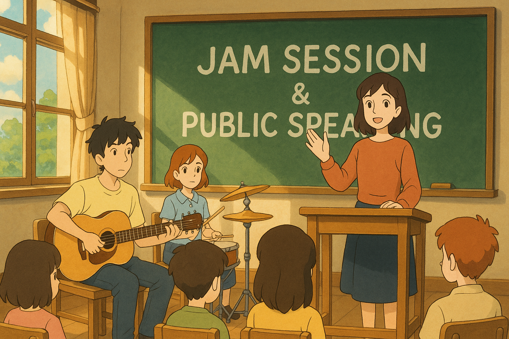

Spontaneous Speaking by Susparsh Jakhmola
This JAM topic explores the evolving relationship between artificial intelligence and human social interaction, questioning whether AI companions can replace or complement human friendships in the future.
This impromptu speech demonstrates how to structure thoughts quickly on a complex topic using the public speaking framework below.
A step-by-step guide to effective impromptu speaking, adapted from the student's guide to public speaking.
| Part | What to do | Tip | Time (for 5-min talk) |
|---|---|---|---|
| Opening | Hook + reason to listen | Question, statistic, or mini-story | 45 sec |
| Body | 2-3 supporting points | Use PEEL – Point, Explain, Example, Link | 3 min |
| Close | Signal the end + call to action | "Remember..." or "So next time..." | 45 sec |
Point: State your main idea clearly
Explain: Provide reasoning or evidence
Example: Give a concrete illustration
Link: Connect back to your main argument
Practice your impromptu speaking skills with these thought-provoking topics:
Explore the pros and cons of introducing programming education at an early age.
Discuss the environmental benefits versus safety concerns of personal electric vehicles.
Imagine and describe a practical innovation that would improve student life.
Analyze how artificial intelligence might change social relationships in coming years.
Debate whether academic grades truly reflect a student's abilities and potential.
Susparsh demonstrates exceptional impromptu speaking abilities, showcasing confidence and clarity in spontaneous communication situations.
The Jam Session format helps develop: